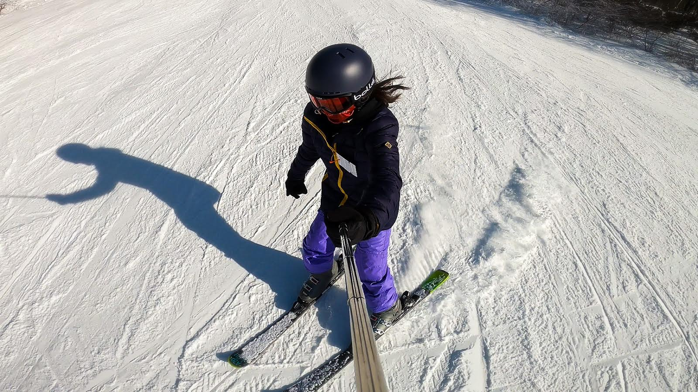
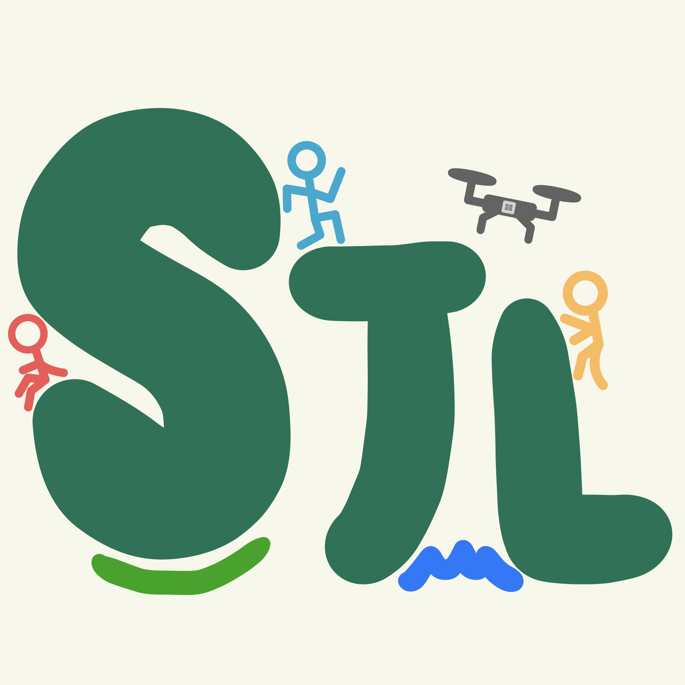

<link rel="preconnect" href="https://fonts.gstatic.com" />
<link href="https://fonts.googleapis.com/css2?family=Oswald&display=swap" rel="stylesheet">
<link href="https://fonts.googleapis.com/css2?family=Rubik+Doodle+Shadow&display=swap" rel="stylesheet">
<link rel="stylesheet" href="style.css" />

<head>
  <title>Shannon Liu</title>
  <link
    rel="shortcut icon"
    href="logo.jpg"
    type="image/png"
  />
  <link rel="stylesheet" href="style.css" />
</head>

<html>
  <nav id="navbar">
    <ul id="navlist">
      <li><a href="#welcome">Welcome</a></li>
      <li><a href="#experience">Experience</a></li>
      <li><a href="#projects">Projects</a></li>
      <li><a href="#about">About</a></li>
      <li><a href="#contact">Contact</a></li>
    </ul>
  </nav>
  <main id="main-doc">
    <section id="welcome" class="welcome-background">
     <h1 style="font-size: 100px; text-align: center;">Hi, welcome to Shannon's Website!</h1>
     <p>Cockburn Town, Turks & Caicos Winter 2023</p>
    </section>

    <section id="experience">
        <h1>Experience</h1>
        <section id="box">
            <h2>Cornell University Unmanned Air Systems &nbsp; <em>Ithaca, NY </em></h2>
            <h3>Imaging Systems Software Engineer</h3>
            <p>October 2023 - Present</p>
            <ul>
              <li>Created software for controlling the gimbal and camera of an unmanned aircraft, scheduling image capture, transmitting and managing image and mission data to a ground server</li>
            </ul>
        </section>
        <section id="box">
            <h2>Jersey Drone YouTube Channel &nbsp; <em>Remote</em></h2>
            <h3>Founder, Content Creator, Drone Pilot</h3>
            <p>December 2019 - Present</p>
            <ul>
              <li>Filmed, edited, and uploaded aerial footage biweekly on <a href=https://www.youtube.com/c/JerseyDrone>Jersey Drone</a></li>
            </ul>
        </section>
        <section id="box">
            <h2>Marlboro Learning Center &nbsp; <em>Remote</em></h2>
            <h3>Instructor, Class Coordinator, Website Developer </h3>
            <p>July 2023 - Present</p>
            <ul>
              <li>Taught students Python programming and SAT (reading, writing, and math)</li>
              <li>Communicated class information between students, parents, and teachers through website content</li>
            </ul>
        </section>
        <section id="box">
            <h2>PALS Learning Center &nbsp; <em>South Plainfield & Edison, NJ</em></h2>
            <h3>Instructor, Grader</h3>
            <p>February 2023 - August 2023</p>
            <ul>
              <li>Tutored students from K-12 and graded students’ homework assignments to ensure full understanding of coursework</li>
            </ul>
        </section>
        <section id="box">
            <h2>Trillium Labs &nbsp; <em>New York, NY </em></h2>
            <h3>Software Engineer Intern</h3>
            <p>(start of) July 2022 - (end of) July 2022</p>
            <ul>
              <li>Developed 4 simulators, improved 2 existing simulators, and created various auxiliary classes to imitate buying, borrowing, and selling stocks for testing purposes in a financial technology service company</li>
              <li>Gained Java programming experience, problem-solving, and collaboration skills in an office environment</li>
            </ul>
        </section>
    </section>

    <section id="projects">
      <h1>Projects</h1>
      <p>Everything is always a work in progress 😁</p>
      <div class="projects-grid">
        <figure>
            <h2>This website (personal portfolio)!</h2>
            <p>January 2024</p>
            <p>Built with HTML and CSS</p>
            <a href="" target="_blank"
                ></a>
        </figure>
        <figure>
            <h2>Jersey Drone YouTube Channel website!</h2>
            <p>July 2020 (currently updating to add responsive features!)</p>
            <p>Built with HTML and CSS</p>
              <a href="https://myonlinedirectory.com/jersey_drone/#welcome" target="_blank"
                ></a>
            </figure>
      </div>
    </section>
    
    <section id="about">
      <h1>About Me</h1>
      
      <ul>
        <li>I'm a freshman studying computer science at Cornell University's College of Engineering.</li>
        <li>I'm from Edison, New Jersey (a town north of the Raritan River) and I love cold weather.</li>
        <li>I'm a big fan of adventure so I'm always enthusiastic to go skiing, hiking, running, traveling, etc.</li>
        <li>In my free time, I enjoy flying drones, photography, video editing, piecing puzzles together, and learning new skills!</li>
    </ul>
    </section>
    <section id="contact">
      <h1>Contact Information & Links</h1>
      <h3>Feel free to reach out or check out any links below! 😁 </h3>
      <div class="contact-grid">
        <p class="contact-tile">
          <a href="mailto:sjl356@cornell.edu" target="_blank">Email</a>
        </p>
        <p class="contact-tile">
          <a
            href="https://https://www.linkedin.com/in/shannon-liu-23b8a4134/"
            target="_blank"
            >LinkedIn</a>
        </p>
        <p class="contact-tile">
          <a href="https://github.com/shannon-jliu" target="_blank"
            >Github</a>
        </p>
        <p class="contact-tile">
            <a href="https://youtube.com/JerseyDrone" target="_blank"
            >YouTube</a>
        </p>
      </div>
    </section>
  </main>

  <footer>
    <p>Website created and designed by Shannon Liu.</p>
    <p></p>
  </footer>
</html>